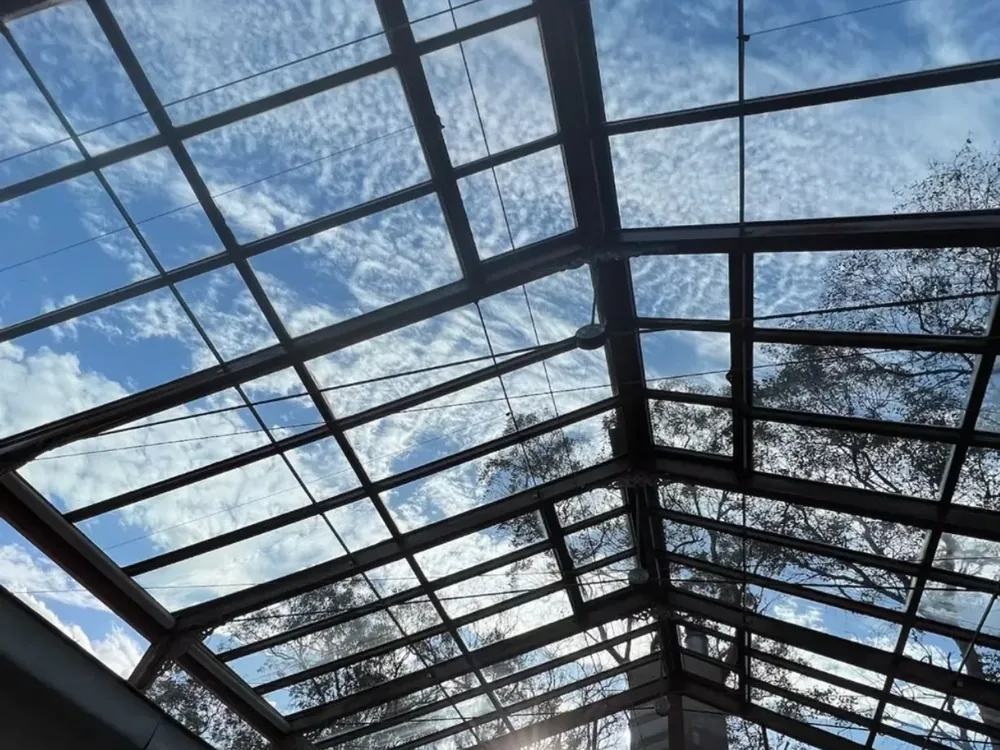
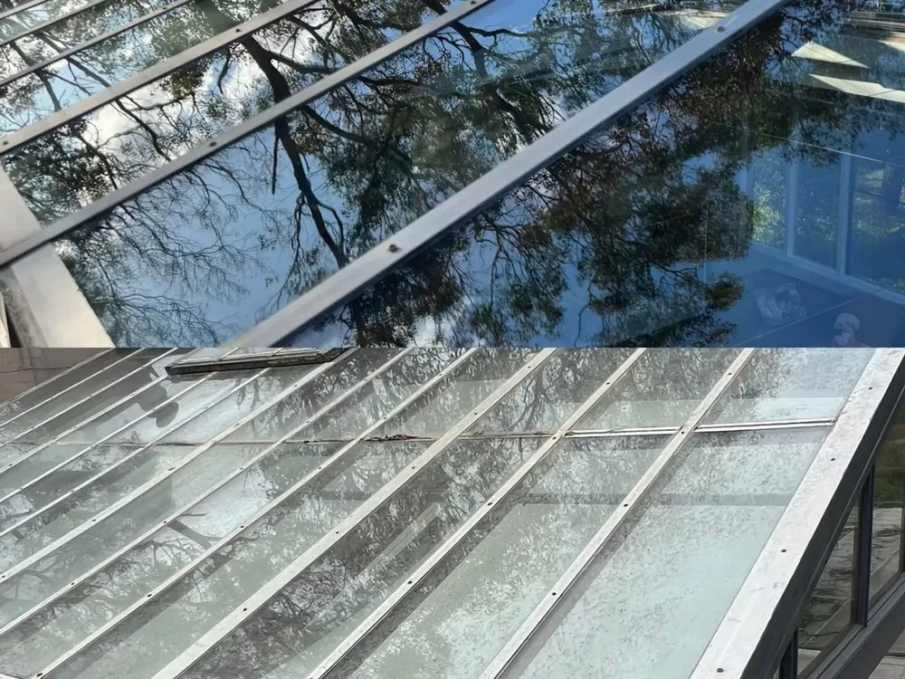
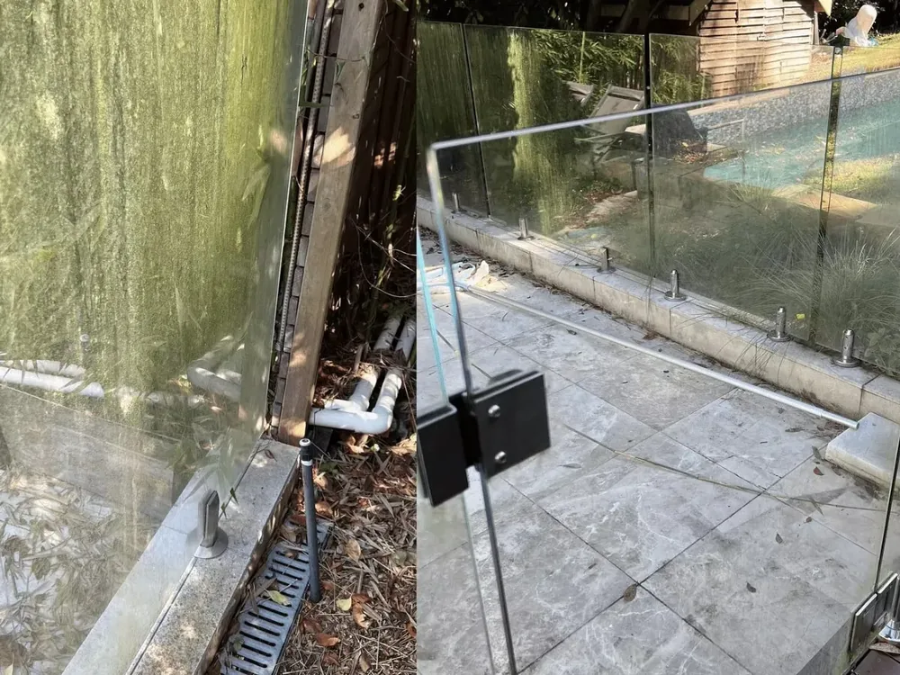

Window Cleaning Melbourne
Professional Window Cleaning in Melbourne's Eastern Suburbs
Let the light back in. We deliver streak-free windows inside and out — safely, reliably and with real attention to detail — for homes and businesses across the East.
Dirty windows are one of the first things visitors notice — and one of the easiest ways to instantly lift the look of your property. Over time, dust, rain marks, salt, pollen and cobwebs build up on the glass, dulling your view and letting your home down. Stan The Man Cleaning restores that crisp, clear finish with a thorough, professional window clean that reaches the spots a quick wipe-down never will.
Based in Donvale and servicing Melbourne's Eastern Suburbs, we clean windows for houses, units, townhouses and commercial premises. Whether it's a single-storey home or a multi-level property with hard-to-reach glass, we have the equipment and the experience to get it done safely and beautifully.
What's included in our window cleaning
- Interior and exterior glass cleaned to a streak-free finish
- Window frames, sills and tracks wiped and detailed
- Flyscreens removed, cleaned and refitted
- Cobweb and dust removal around windows and entryways
- Purified-water and squeegee methods for a spotless, lasting shine
- Careful, tidy work that respects your home and garden
Why choose Stan The Man for window cleaning
You deal directly with an owner-operator who genuinely cares about the result. We're fully insured, punctual and meticulous — we don't cut corners or rush out the door. Many customers pair their window clean with gutter cleaning or a pressure wash to give the whole exterior a refresh in a single, convenient visit.
Servicing your local area
We regularly clean windows in Donvale, Doncaster, Doncaster East, Templestowe, Warrandyte, Park Orchards, Ringwood, Mitcham, Nunawading, Blackburn, Box Hill, Balwyn, Bulleen and Eltham. If you're anywhere in Melbourne's Eastern Suburbs, we'd love to help.
Real results
See the difference
Drag the slider to see the streak-free difference on a recent window clean in Melbourne's East.
Our process
How we clean your windows
Assess & protect
We check every window, note frames, tracks and flyscreens, and lay down protection so sills and landscaping stay spotless.
Pure-water clean
Using professional squeegees and, for high glass, a water-fed pole, we wash away grime for a streak-free, spot-free finish.
Detail & inspect
We wipe frames and sills, clear tracks and do a final light check so every pane is crystal clear before we leave.
Our work
Recent window cleaning jobs



FAQs
Window cleaning questions
Ready for spotless windows?
Get your free quote today and see the difference professional window cleaning makes.